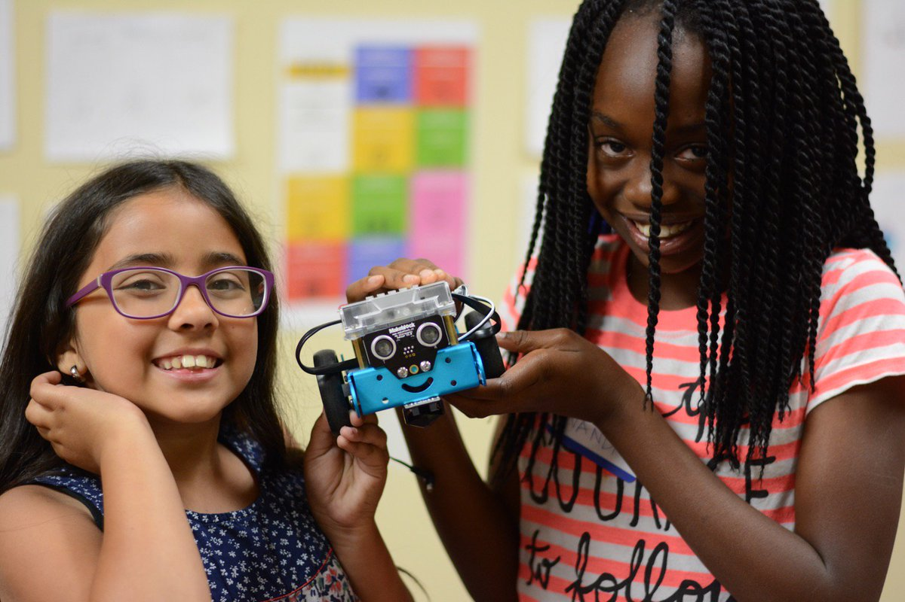

While girls across the world tend to outperform boys in reading and writing skills, they continue to be under-represented in science, technology, engineering and mathematics (STEM). Through the ITU International Girls in ICT Day, we work with partners to build awareness about the gender digital divide, support technology education and skills training, and encourage more girls and young women to actively pursue careers in STEM.
Source: The ITU
Graphic Design Competition
Design a logo for SKN Girls in ICT!
This is a logo design competition open to girls aged 10 to 17 where participants can add Kitti-Nevisian flavour to the International Girls in ICT logo.
Using any graphic design software, individuals can download the logo & add their own creativity to make it more representative St Kitts-Nevis.
To submit your entry, follow InnovationHub on Facebook, Instagram or Twitter. Post your image on any one of these social media sites, and tag us so we can find you. Also be sure to include the hashtags #GirlsinICT #GirlsinICTSKN and #ICTSKN.
Submit your image by Monday, 26th April
Download Logo
Competition Details
Interactive Vlogging
Share your experiences with ICT tools!
This vlogging activity is open to girls and young women aged 12 to 21 years. Participants should form teams of 3 to 5 and record a video where you discuss the questions provided.
To enter, follow InnovationHub on Facebook, Instagram or Twitter, and post your video on any one of these social media sites. Tag us in your post and include the hashtags #GirlsinICT #GirlsinICTSKN and #ICTSKN so we can find you.
Submit your video by Tuesday, 27th April
Discussion Questions
Robotics & Programming

A playful introduction to programming
This is a closed event at the National ICT Centre where select girls from each high school will have fun with mini-robots while learning programming.
20-plus girls in first and second form will be introduced to the world of programming in a playful and engaging way. This provides the foundation for them to continue being creative as they grow into the programmers of tomorrow.
Wednesday, 28th April at the National ICT Centre
Learn about mBots
Live Dialogues

An engaging conversation for women & girls in ICT
An online conversation between experienced women in ICT and the girls aspiring to walk in their footsteps. Follow our social media accounts to be notified about the link to the online forum.
Panelists
Hon Akilah Byron-Nisbett, Minister of ICT, et al
Telly Onu, IT Consultant
Twanna Finch, Graphic Designer
Anastasha Elliott, CEO of Sugartown Organics
Genelle Lake, Information Security Analyst
Join us online on Thursday, 22nd April
Event Details
Social Media Competition
Showcase your talent on TikTok!
This is a competition for girls & young women aged 8 to 21 to show off your acting and dance choreography skills.
Download the voice over provided below & add your own creativity through acting out the conversation and dancing to the music provided.
To submit your entry, post your video on TikTok and include the hashtags #GirlsinICT #GirlsinICTSKN and #ICTSKN.
Submit by Thursday, 29th April by 1:30pm
Competition Details
Judging Criteria
Download Voice Over